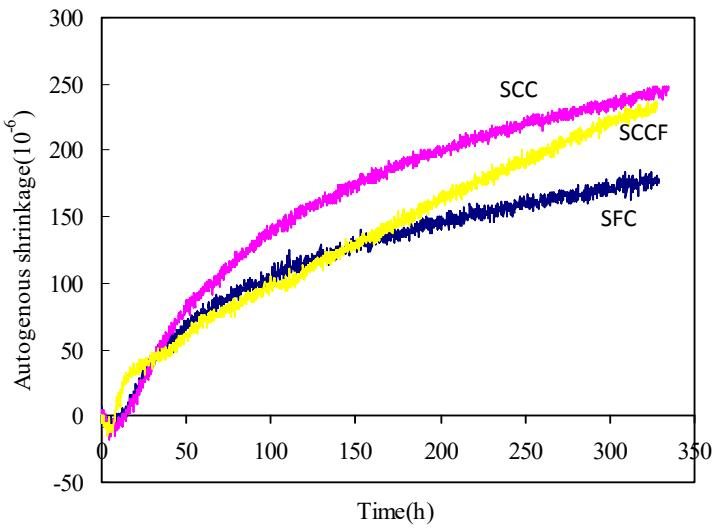
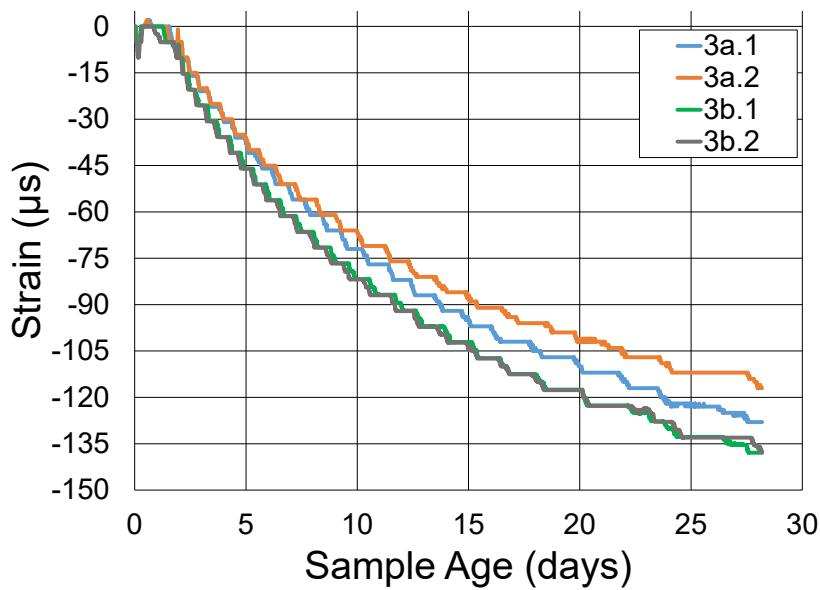
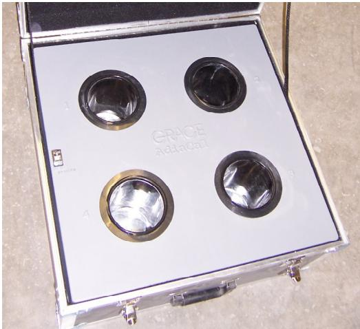
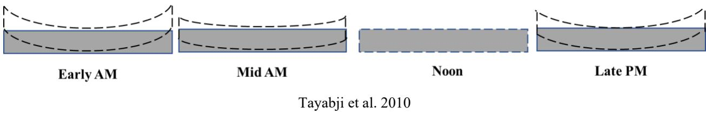

Shrinkage & Early-Age Cracking
Shrinkage and early-age cracking represent a category of concrete distress driven by the complex interplay between material rheology, moisture dynamics, and thermal behavior during the transition from plastic to hardened states. The fundamental mechanism involves volumetric reduction caused by capillary pressure development as water is removed through hydration, bleeding, or evaporation, which generates negative pore-water pressures that induce tensile stresses within the cement paste matrix [1] [2]. These shrinkage strains are compounded by thermal contraction resulting from temperature fluctuations and heat evolution during hydration, creating additional dimensional instability in the early-age material [3] [2]. Cracking occurs when these combined volumetric reductions are restrained by external boundaries, internal reinforcement, or adjacent hardened material, causing tensile stresses to exceed the concrete’s low early-age tensile strength [1] [2]. The susceptibility to these distress mechanisms is closely linked to the pore structure and moisture transport properties, where finer pores may delay but not necessarily prevent long-term shrinkage effects [4].
CP Tech Center reports covering “Shrinkage & Early-Age Cracking” also include the following subtopics: Capillary Pressure in Concrete, Coefficient of Thermal Expansion (Concrete), Drying Shrinkage, Plastic Shrinkage Cracking, and Restrained Shrinkage Ring Test.
Shrinkage and early-age cracking emerge from the complex interplay of volume reduction, moisture loss, and thermal instability in fresh or hardening concrete. Plastic Shrinkage Cracking manifests as fissures in fresh concrete when rapid surface evaporation outpaces bleed water rise, creating negative pore pressures that induce volume reduction and structural weakness before the material achieves final set. As hydration progresses, Capillary Pressure in Concrete generates the negative pore-water suction that pulls the cement paste matrix inward during moisture loss, directly driving the tensile stresses responsible for early-age fissures. This process evolves into Drying Shrinkage, which represents the long-term volumetric contraction of the hardened cement paste matrix as moisture evaporates from its pore structure, contributing to time-dependent volume reduction and resulting fissures that define this category. Thermal effects compound these risks; Coefficient of Thermal Expansion (Concrete) quantifies the dimensional instability induced by temperature fluctuations during early-age curing, directly contributing to thermal stresses that drive cracking alongside shrinkage mechanisms. Engineers assess the severity of these combined forces using the Restrained Shrinkage Ring Test, which quantifies cracking potential by subjecting concrete to restrained shrinkage conditions within a rigid steel enclosure that prevents free contraction.
Sources (12)
Sub-concepts (5)
Fundamentals
Early-age cracking in concrete is fundamentally driven by the development of tensile stresses that exceed the material’s low early-age strength, typically resulting from volume changes induced by moisture loss or thermal gradients. The susceptibility to such distress depends on the interplay between the magnitude of restrained deformation and the concrete’s ability to accommodate strain through creep or micro-cracking before hardening is complete.
Key findings
- Early-age cracking resulted from complex interactions between material composition, environmental conditions, and construction practices, with high placement temperatures exacerbating premature transverse cracking [5].
- The integration of ground granulated blast furnace slag reduced initial heat development and mitigated thermal stresses associated with early-age cracking [5].
- Highly absorptive aggregates contributed to excessive plastic and drying shrinkage cracks, while recycled concrete aggregate or slag compromised aggregate interlock [5].
- Delayed joint sawing significantly increased the incidence of early cracking when compounded by subbase friction and stiffness [5].
- Self-consolidating concrete exhibited significantly higher autogenous and drying shrinkage than conventional pavement mixes due to elevated cementitious content [6].
- Nano-clay admixtures increased thixotropy but inadvertently increased shrinkage depending on the specific material type, necessitating additional mitigation strategies [6].
- Semi-adiabatic calorimetry provided higher accuracy for pavement temperature prediction compared to isothermal methods, making it superior for predictive software inputs [3].
- Increased testing temperatures reduced variation in hydration parameters, suggesting that winter construction posed greater risks for set time and strength development problems [3].
Early-Age Shrinkage Cracking & Mitigation
Evidence: 10 reports (8 primary)
Early-age shrinkage cracking arises from volumetric reductions driven by moisture loss through evaporation and chemical hydration, which generate negative capillary pressures within the pore structure [1] [4] [7] [2]. Cracking occurs when these restrained volume changes induce tensile stresses that exceed the material’s low early-age tensile strength [1] [4] [2]. Mitigation strategies focus on managing internal moisture dynamics to sustain hydration and incorporating discrete fibers to bridge developing cracks and control their propagation [1] [7] [8].
Research problem — Existing prescriptive specifications and legacy testing methods fail to capture the complex interactions between supplementary cementitious materials, chemical admixtures, and environmental conditions, leading to unpredictable shrinkage behavior and uncontrolled early-age cracking in ternary mixtures [5] [9] [10]. High-performance concrete systems, including self-consolidating concretes and very early-strength overlays, exhibit heightened susceptibility to plastic and autogenous shrinkage cracking due to elevated cementitious content and rapid hydration rates, necessitating rigorous moisture control and optimized mix proportioning [4] [6] [2]. Mitigation strategies involving shrinkage-reducing admixtures, internal curing agents like superabsorbent polymers, and fiber reinforcement require careful balancing of rheological stability, structural integrity, and long-term durability to prevent trade-offs that compromise the concrete’s performance [1] [6] [7].
The figure below illustrates the resulting shrinkage development in concrete mixes without nano-clay to demonstrate these autogenous shrinkage behaviors.

Autogenous shrinkage development of SCC, SFC, and SCCF concrete mixes over time. [6]The figure plots autogenous shrinkage against time for three different mortar mixtures: SCC, SCCF, and SFC. All mixes exhibit an initial swelling phase before transitioning into a period of continuous volumetric reduction.
State of the art — The industry has transitioned from prescriptive mix specifications to performance-based optimization frameworks that integrate material compatibility, environmental management, and construction quality control to address the complex interactions driving early-age distress [5]. Current practice employs advanced monitoring tools like the Air Void Analyzer for real-time assessment and predictive modeling software such as HIPERPAV II to estimate critical tensile stresses, while material strategies focus on using supplementary cementitious materials and internal curing techniques to mitigate thermal gradients and capillary pressure [5] [7]. Mitigation approaches increasingly leverage fiber-reinforced composites to bridge microcracks and control propagation, though the field faces ongoing challenges regarding material variability, constructability issues like slump loss, and the need for quantitative guidance on ternary mixtures [1] [10].
The following figure illustrates the compressive strain development for Mix 3 containing 0.50% fiber.

Compressive strain development for Mix 3 (0.50% fiber) [1]All plotted curves exhibit a downward trend, indicating an increase in magnitude of compressive strain as the sample age progresses from zero to nearly thirty days.
Findings from the reports
- Identified that early-age cracking is a multifaceted distress mechanism driven by complex interactions between mix design, environmental conditions (such as high ambient temperatures and temperature gradients), and construction practices like delayed joint sawing [5].
- Demonstrated that highly absorptive aggregates, such as blast furnace slag, contribute to excessive plastic and drying shrinkage cracks, while also compromising aggregate interlock in recycled concrete applications [5].
- Found that self-consolidating concrete (SCC) exhibits significantly higher autogenous and drying shrinkage than conventional pavement mixes due to elevated cementitious content, requiring precise proportioning and rigorous curing to prevent cracking [6].
- Observed a critical trade-off where nano-clay admixtures enhance shape stability but can inadvertently increase autogenous shrinkage rates, whereas specific shrinkage-reducing agents effectively decrease drying shrinkage strain [6].
- Showed that internal curing using prewetted lightweight aggregates or superabsorbent polymers mitigates early-age cracking by reducing capillary pressure development and sustaining hydration without sacrificing workability [7].
- Established that the rate of capillary pressure development serves as a critical indicator for plastic shrinkage potential, with slower rates correlating to delayed or less severe cracking [1].
- Revealed a destructive trade-off where Type K expansive cement reduces crack widths but increases the rate of capillary pressure development, making Class F fly ash a superior alternative for mitigating plastic shrinkage without adverse pressure effects [1].
- Demonstrated that fiber reinforcement mitigates cracking through crack-bridging mechanisms, with hybrid systems combining polypropylene microfibers and alkali-resistant glass macrofibers providing optimal synergy for comprehensive crack control [1].
- Found that very-early-strength latex-modified concrete induces thermal cracking due to rapid heat generation during the first 5–10 hours of hydration, which exacerbates shrinkage distress when combined with substrate restraint and early traffic loading [4].
- Identified that fiber reinforcement effectively prevents mid-slab transverse cracking in sections with extended joint spacings but does not significantly enhance load transfer efficiency or smoothness within the first seven years of service [8].
- Showed that shrinkage behavior in ternary mixtures is highly dependent on specific cement types and supplementary materials, with some blends exhibiting higher shrinkage than pure Type I cement controls [9].
- Identified plastic shrinkage as a primary defect in 3D concrete printing, attributed to rapid moisture loss from extruded filaments at low water-to-binder ratios required for buildability [2].
Novelty & rigor — Research has innovated by integrating capillary pressure sensors into restrained slab tests to shift the diagnostic focus from static crack magnitude to the dynamic rate of pore water pressure development, providing a more reliable metric for assessing mitigation strategies [1]. The field is advancing through the deployment of mobile laboratories equipped with real-time monitoring tools like air void analyzers and semi-adiabatic calorimeters to enable immediate quality control adjustments during construction rather than relying on delayed hardened concrete testing [5] [9]. Reproducing these advanced mitigation approaches requires rigorous adherence to specific material characterizations, such as using chalk-based sprays for accurate evaporation monitoring in digital image correlation studies and employing standardized absorption tests for superabsorbent polymers to ensure consistent dispersion [1] [7].
Reported values
| Parameter | Value | Context | Source |
|---|---|---|---|
| GGBFS substitution rate | 40% | by weight of Type I portland cement for PCC pavements | [5] |
| joint spacing (polyolefin fiber section) | 18.3-meter (60-foot) meter/foot | interpanel cracking between joints of the polyolefin fiber section | [5] |
| PCC placement temperature | >80°F | high PCC placement temperatures, especially during morning hours on hot summer days | [5] |
| cracking time | 7 days | Michigan mixture | [9] |
| drying shrinkage strain | < 500 millionths | all tested mixtures at 28 days | [9] |
| free drying shrinkage strain | < 500 millionths | all tested mixtures at 28 days | [9] |
| AR glass macrofiber volume fraction | 0.25% | recommended fiber combination | [1] |
| basalt glass fiber volume fraction for crack elimination | 0.1% % volume fraction | plastic shrinkage-induced cracks (regardless of type) | [1] |
| autogenous shrinkage | 115 microstrain | laboratory-cured specimens (LMC-VE) | [4] |
| crack observation period | 50 months | LMC-VE overlay field monitoring | [4] |
| autogenous shrinkage | 37% | SCC and SCCF compared to SFC | [6] |
| cement content reduction | 24% | use of slag and addition of coarse aggregates | [6] |
| joint spacing | 30 ft | fiber reinforcement prevented mid-slab transverse cracking in overlays | [8] |
| joint spacing | 40 ft | fiber reinforcement prevented mid-slab transverse cracking in overlays | [8] |
| curing duration | 6 hours | printed objects covered by plastic cover and sheet | [2] |
11 more distinct values omitted here; the full span-verified set is in the quantities sidecar.
Across the reviewed reports, early-age shrinkage cracking is established as a multifaceted distress mechanism driven by complex interactions between mix design, environmental conditions, and construction practices. Material composition significantly influences susceptibility, with highly absorptive aggregates and high-cementitious systems like self-consolidating concrete increasing shrinkage risks, while supplementary cementitious materials such as slag or fly ash can mitigate thermal stresses and capillary pressure development. Mitigation strategies involve a critical trade-off between rapid strength gain and cracking potential, where expansive cements or high-early-strength mixes may accelerate capillary pressure or thermal deformation, necessitating precise timing for joint sawing and rigorous curing protocols to manage moisture loss. Fiber reinforcement provides effective crack-bridging mechanisms that reduce plastic and drying shrinkage cracking, although field performance indicates that specific dosages may not significantly improve load transfer efficiency or surface smoothness in the early service period. Advanced techniques such as internal curing and prompt post-placement covering are identified as essential for maintaining humidity and reducing plastic shrinkage, particularly in low water-to-binder ratio applications or high-restraint environments. [5] [1] [4] [6] [7] [8] [2]
The figure below illustrates the cracking potential over time for all fiber-reinforced concrete mixes.
 Cracking potential over time for all FRC mixes [1]
Cracking potential over time for all FRC mixes [1]
The figure plots the cracking potential of concrete specimens containing varying percentages of polypropylene microfibers against sample age in days. Cracking potential is defined as “the ratio of the actual maximum stress experienced during ring testing and the splitting tensile strength of a given concrete mix.” The data demonstrates that mixes with higher fiber dosages exhibit lower cracking potential, indicating improved resistance to drying shrinkage cracking.
Implications — Design and specification practices must shift from prescriptive limits to performance-based criteria that evaluate mixtures under expected weather conditions, as material compatibility and proportioning critically influence cracking potential beyond standard quality control metrics [5] [9]. Construction execution requires rigorous management of thermal gradients and moisture loss through timing adjustments, such as cooler placement conditions, alongside the adoption of internal curing technologies to mitigate autogenous and drying shrinkage stresses in high-performance systems [5] [11] [7]. Engineers must balance conflicting rheological requirements and chemical trade-offs by utilizing hybrid reinforcement strategies and specific admixtures to ensure structural stability while preventing early-age distress in both conventional pavements and emerging applications like additive manufacturing [1] [6] [2].
Limitations — Predictive modeling often fails to account for the inherent unpredictability of early-age distress, as minor variations in weather or mix characteristics can lead to random cracking despite rigorous quality control measures [5]. Mitigation strategies frequently involve critical trade-offs, such as reduced green strength when using supplementary cementitious materials or compromised workability and hydration kinetics when employing fiber reinforcement or high-flow mix designs [1] [6] [2]. Current laboratory testing protocols may not accurately reflect field performance due to inadequate surface preparation or insufficient sensitivity to early-age conditions, while prescriptive specifications can hinder the optimization of mix designs based on actual performance [9] [4].
Modeling Limitations & Field Practices
Evidence: 2 reports (1 primary)
Modeling early-age cracking is complicated by the complex interplay between material rheology, environmental conditions, and structural restraint, which are difficult to capture accurately in simulation. Field practices often require balancing flowability with shape-holding capacity, as seen in specialized concretes that must consolidate under their own weight while maintaining form integrity immediately after placement [6]. Achieving this balance relies on precise mix proportioning and admixture use to control thixotropy and yield stress, introducing variables that challenge predictive models [6].
Research problem — Accurate mechanistic-empirical pavement design is hindered by a significant lack of localized data on concrete shrinkage and thermal properties, forcing reliance on generic defaults that fail to reflect specific mix proportions or modern materials [12]. The absence of compiled material property information prevents the development of reliable prediction equations and typical input values necessary for rational distress prediction at advanced design levels [12].
State of the art — Current modeling practices rely heavily on mechanistic-empirical frameworks like the MEPDG, which utilize input hierarchies ranging from direct laboratory testing to historical data estimation [12]. Standard equations often fail to capture local material behaviors without regional calibration, leading practitioners to rely on default values until more localized long-term test data becomes available [12]. Emerging approaches using artificial neural networks have shown limited success due to high variability in mix designs, highlighting the need for comprehensive databases that account for specific aggregate and cementitious material proportions [12].
Findings from the reports
- Evaluated the drying shrinkage of typical Iowa concrete mixtures and found that ultimate shrinkage was approximately 454 microstrain, with the time to reach 50% of that value occurring at 32 days [12].
- Observed that the measured shrinkage metrics for Iowa concrete aligned closely with MEPDG default values (491 microstrain and 35 days), leading to a recommendation to use these standard defaults for Level 3 design in regions lacking localized data [12].
- Identified a critical gap in comprehensive data linking mix design to mechanical properties, which hinders the development of accurate, site-specific models for early-age cracking and shrinkage prediction [12].
- Reported significant discrepancies between available local test data and standard defaults for other parameters, such as elastic modulus (4,820,000 psi versus default values) and strength ratios, highlighting the limitations of relying solely on generalized predictive equations [12].
- Recommended relying on established MEPDG default values for early-age cracking parameters until more robust datasets are available to refine prediction equations and enable rational, region-specific alternatives [12].
Novelty & rigor — Novelty in modeling field practices for self-consolidating concrete lies in the development of performance-based proportioning procedures that integrate rheological targets with mini-paver simulations to accurately replicate slip-form extrusion conditions [6]. Research rigor is demonstrated by the aggregation of extensive historical datasets to calibrate mechanistic-empirical models, revealing that standard predictive defaults often misrepresent local material behavior and require data-driven regional adjustments [12]. Reproducibility in this domain is constrained by the necessity of specific experimental protocols, such as controlled drying environments and standardized mechanical testing, which are essential for validating shrinkage predictions against established design frameworks [6] [12].
The figure below illustrates these time-dependent changes in drying shrinkage strain.
 Time-dependent changes in drying shrinkage strain for concrete [12]
Time-dependent changes in drying shrinkage strain for concrete [12]
Results showed that the drying shrinkage of concrete can be affected by the volume percentage of aggregate and also the w/c.
Reported values
| Parameter | Value | Context | Source |
|---|---|---|---|
| 28-day PCC modulus of rupture | 650 psi | Iowa Level 3 MEPDG input (default value) | [12] |
| drying shrinkage | 350 microstrain | one specific mix (at 123 days) | [12] |
| elastic modulus | 4,820,000 psi | available Iowa test data (average value) | [12] |
| strength ratio | 1.60 | concrete property (approximate) | [12] |
| time to reach 50% of ultimate shrinkage | 32 days | concrete (typical Iowa mixtures) | [12] |
| time to reach 50% of ultimate shrinkage (MEPDG default) | 35 days | MEPDG default values | [12] |
| time to reach 50% shrinkage | 32 days | C-3WR-C20 concrete (predicted from short-term measurements) | [12] |
| time to reach 50% ultimate shrinkage | 32 days | concrete (Iowa test data) | [12] |
| ultimate drying shrinkage | 454 microstrain | concrete (typical Iowa mixtures) | [12] |
| ultimate drying shrinkage | 491 microstrain | MEPDG default values | [12] |
| ultimate shrinkage | 450 microstrain | C-3WR-C20 concrete (predicted from short-term measurements) | [12] |
| ultimate shrinkage | 454 microstrain | concrete (Iowa test data) | [12] |
Implications — The absence of comprehensive datasets linking mix designs to material inputs prevents the development of reliable predictive models, forcing engineers to rely on generic defaults that may not accurately reflect local variations [12]. Agencies should systematically document concrete properties alongside mix design information to enable the creation of rational, region-specific prediction models for mechanistic-empirical pavement design [12].
Limitations — Predictive models for shrinkage and early-age cracking are constrained by a scarcity of comprehensive, locally calibrated data sets that link specific mix proportions to time-dependent properties [12]. The reliance on generic default values or single-mix preliminary studies limits the ability to capture the variability inherent in diverse concrete mixes and incorporate critical factors such as aggregate type, cement proportion, and curing conditions [12]. Existing prediction equations often lack sufficient validation against local materials containing supplementary cementitious materials, necessitating caution when applying derived correlations for mechanical properties [12].
Thermal Effects and Monitoring in Early Age Concrete
Evidence: 2 reports (2 primary)
Cement hydration is an exothermic chemical process that generates heat, with the resulting thermal profile and reaction rates heavily influenced by material composition and ambient conditions [3]. Temperature gradients within concrete elements cause differential expansion or contraction across their depth, leading to curling or warping deformations that alter structural geometry [11]. Monitoring these thermal behaviors is essential for predicting early-age properties and assessing the risk of cracking due to restrained volume changes [3].
Research problem — The industry lacks accurate predictive capabilities for the critical tensile stresses that develop during early-age concrete, necessitating a better understanding of how to balance rapid strength gain against thermal stress management under varying environmental conditions [3]. Current mechanistic-empirical design methods struggle to isolate shrinkage-induced volume changes from hourly thermal gradients, creating a need for standardized techniques that can quantify these distinct effects on pavement deformation and long-term performance [11].
State of the art — Monitoring practices have shifted from traditional quality control to calorimetry, which tracks heat evolution to predict setting times and thermal cracking risks based on mix proportions and curing conditions [3]. Prediction accuracy is enhanced by integrating semi-adiabatic test data into mechanistic models like HIPERPAV II, allowing for the detection of material incompatibilities that cause erratic hydration behavior [3].
The following figure illustrates the AdiaCal calorimeter used to perform these semi-adiabatic tests.

AdiaCal calorimeter [3]The image displays an AdiaCal semi-adiabatic calorimeter, a device used to monitor concrete temperature development history and set times. The apparatus consists of four cylindrical sample holders arranged in a square pattern within an insulated case.
Findings from the reports
- Semi-adiabatic calorimetry provided higher accuracy for predicting pavement temperature and early-age cracking potential compared to isothermal methods [3].
- Increased testing temperatures reduced the variation in hydration heat evolution parameters, indicating that winter construction poses greater risks for set time and strength development issues than summer conditions [3].
- The shrinkage equivalent temperature difference had a greater impact on concrete slab deformation than hourly or overall equivalent temperature differences [11].
- Concrete slabs remained flatter with reduced curvature and deflection as the absolute equivalent temperature difference approached zero, confirming that balanced thermal and moisture gradients minimize distress [11].
- Quality Management Concrete (QMC) mix designs were identified as superior to other mix types for reducing overall curling and warping tendencies in pavements [11].
Novelty & rigor — A computational framework converts laboratory isothermal calorimetry data into semi-adiabatic heat signatures using finite difference methods, enabling more accurate prediction of early-age thermal stresses and cracking potential than standard database inputs [3]. Algorithmic processing of high-speed profiler data isolates environmental curling and warping effects from other roughness sources, providing a mechanistic evaluation of pavement deformation that accounts for seasonal and diurnal thermal variations [11]. Reproducing these analyses requires conducting calorimetry tests at multiple controlled temperatures to capture mix sensitivity, alongside deploying high-speed inertial profilers across diverse sites and seasons to validate deformation indicators against static measurement methods [11] [3].
The following figure illustrates the accuracy of these predictive models by comparing calculated thermal profiles against field data.
 Predicted pavement temperatures versus measurements (pavement top, Alma Center, WI) [3]
Predicted pavement temperatures versus measurements (pavement top, Alma Center, WI) [3]
The figure displays a time-series plot comparing measured pavement surface temperatures against two predicted temperature profiles over several days. One prediction curve is labeled “Isothermal Predicted Top” and the other “Adiabatic Predicted Top,” with the latter showing a closer fit to the measured data points. This data illustrates the thermal behavior of concrete during early-age curing, which generates the temperature fluctuations that drive thermal contraction and cracking.
Across the reviewed reports, thermal monitoring and equivalent temperature modeling collectively establish that balancing thermal gradients with moisture-induced shrinkage is critical for minimizing early-age distress, as concrete slabs exhibit reduced curvature and deflection when these opposing forces approach equilibrium. While calorimetric testing provides essential data on hydration heat evolution to predict thermal stresses under varying construction temperatures, mechanistic models validate that specific equivalent temperature differences effectively aggregate these transient and permanent thermal effects to accurately forecast pavement curling and warping behaviors. [11] [3]
The figure below illustrates how these thermal and moisture dynamics manifest as diurnal slab curvature.

Diurnal slab curvature [11]The figure displays four schematic cross-sections of a concrete slab at different times of the day: Early AM, Mid AM, Noon, and Late PM. In the Early AM and Late PM stages, the slab edges are shown curling upward relative to the center, while at Noon, the slab is depicted as flat or level. This visualizes how diurnal temperature reversals cause the deflection of a concrete pavement slab to change throughout the day.
Implications — Practitioners should prioritize semi-adiabatic calorimetry over isothermal methods to improve the accuracy of thermal stress predictions and enhance the reliability of early-age performance forecasts [3]. Routine heat evolution testing enables mix designers to proactively identify material incompatibilities with supplementary cementitious materials and detect setting time variations caused by environmental or admixture factors before construction begins [3].
The following figure illustrates the exponential equations used to approximate the relationship between P and Q.
 Exponential equations to approximate P vs. Q [3]
Exponential equations to approximate P vs. Q [3]
The figure displays a graph of Measured Heat Evolution Rate (P) versus Calculated Heat State (Q), showing data points for four different temperatures. Exponential regression curves are fitted to the data, with equations provided for each temperature condition. The source context explains that these statistical regressions are utilized to predict the trend of P vs. Q points at a longer time period during hydration when tests stop before reaching maximum heat state.
Limitations — Calorimetry methods fail to reliably detect variations in the water-cement ratio of field concrete, limiting their utility for mix proportion verification without supplementary testing [3]. The absence of a standardized technique for quantifying curling and warping effects creates uncertainty in how these phenomena are measured across different studies [11]. A lack of commercial humidity sensors suitable for long-term field monitoring forces an over-reliance on temperature data, which may not fully capture complex moisture interactions [11].
Related concepts
In this hierarchy
- Parent: Early-Age Behavior, Curing & Distress
- Child: Capillary Pressure in Concrete
- Child: Coefficient of Thermal Expansion (Concrete)
- Child: Drying Shrinkage
- Child: Plastic Shrinkage Cracking
- Child: Restrained Shrinkage Ring Test
Related by shared evidence
- Drying Shrinkage — shares 13 reports
- CP Tech Center Reports — shares 11 reports
- Concrete Curing — shares 10 reports
- Concrete Materials & Mixtures — shares 10 reports
- Air Entraining Agent — shares 9 reports
- Supplementary Cementitious Materials — shares 9 reports
- Cement Hydration — shares 8 reports
- Fly Ash — shares 8 reports
Similar topics
- Drying Shrinkage
- Plastic Shrinkage Cracking
- Restrained Shrinkage Ring Test
- Early-Age Behavior, Curing & Distress
- Concrete Curing
- Cement Hydration
- Capillary Pressure in Concrete
- Concrete Materials & Mixtures
References
- B. Shafei, P. Taylor, B. Phares, and M. Kazemian, "Fiber-Reinforced Concrete for Bridge Decks," Bridge Engineering Center, Iowa State University, Ames, IA, Rep. TR-767, 2021. [Online]. Available: https://www.intrans.iastate.edu/wp-content/uploads/2021/12/fiber-reinforced_concrete_in_bridge_decks_w_cvr.pdf
- K. Wang, K. Wi, S. Laflamme, S. Sritharan, P. Taylor, and H. Qin, "Feasibility Study of 3D Printing of Concrete for Transportation Infrastructure," Institute for Transportation, Iowa State University, Ames, IA, Rep. TR-756, 2020. [Online]. Available: https://intrans.iastate.edu/app/uploads/2020/10/concrete_transportation_infrastructure_3D_printing_feasibility_w_cvr.pdf
- K. Wang, J. M. Ruiz, J. Hu, Z. Ge, Q. Xu, J. Grove, and R. Rasmussen, "Simple and Rapid Test for Monitoring the Heat Evolution ..., Phase III," National Concrete Pavement Technology Center, Ames, IA, 2008. [Online]. Available: https://www.intrans.iastate.edu/wp-content/uploads/2018/03/CalorimeterReportPhaseIII.pdf
- K. Wang, B. M. Shankaramurthy, A. Anand, Y. Sargam, K. Freeseman, and B. Phares, "Performance Evaluation of Very Early Strength Latex-Modified Concrete (LMC-VE) Overlay," Institute for Transportation, Iowa State University, Ames, IA, Rep. TR-771, 2024. [Online]. Available: https://bec.iastate.edu/wp-content/uploads/2024/10/performance_evaluation_of_LMC-VE_overlay_w_cvr.pdf
- J. Grove, G. Fick, T. Rupnow, and F. Bektas, "Material and Construction Optimization for Prevention of Premature Pavement Distress in PCC Pavements," National Concrete Pavement Technology Center, Ames, IA, Rep. TPF-5(066), 2008. [Online]. Available: https://www.intrans.iastate.edu/wp-content/uploads/2018/03/mco-final.pdf
- K. Wang, S. P. Shah, J. Grove, P. Taylor, P. Wiegand, B. Steffes, G. Lomboy, Z. Quanji, L. Gang, and N. Tregger, "Self-Consolidating Concrete—Applications for Slip-Form Paving: Phase II," National Concrete Pavement Technology Center, Ames, IA, Rep. TPF-5(098), 2011. [Online]. Available: https://www.intrans.iastate.edu/wp-content/uploads/2018/03/SCC_Phase_2_final_report-edited_wcover.pdf
- W. J. Weiss and L. Montanari, "Guide Specification for Internally Curing Concrete," National Concrete Pavement Technology Center, Ames, IA, Rep. TPF-5(286), 2017. [Online]. Available: https://www.intrans.iastate.edu/wp-content/uploads/2018/09/IC_guide_spec_w_cvr.pdf
- D. King, B. Yang, P. Taylor, and H. Ceylan, "Field Performance of Fiber-Reinforced Concrete Overlays," Institute for Transportation, Iowa State University, Ames, IA, Rep. TR-816, 2025. [Online]. Available: https://www.intrans.iastate.edu/wp-content/uploads/2025/05/field_performance_of_frc_overlays_w_cvr.pdf
- P. Taylor, P. Tikalsky, K. Wang, G. Fick, and X. Wang, "Development of Performance Properties of Ternary Mixtures: Field Demonstrations and Project Summary," National Concrete Pavement Technology Center, Ames, IA, Rep. TPF-5(117), 2012. [Online]. Available: https://www.intrans.iastate.edu/wp-content/uploads/2018/03/ternary_final_w_cvr.pdf
- S. Schlorholtz, "Development of Performance Properties of Ternary Mixes: Scoping Study (Phase 1)," Center for Portland Cement Concrete Pavement Technology, Iowa State University, Ames, IA, Rep. DTFH61-01-X-00042 (Project 13), 2004. [Online]. Available: https://www.cptechcenter.org/wp-content/uploads/2018/03/ternary_mixes.pdf
- K. Tian, D. King, B. Yang, S. Kim, A. Alhasan, and H. Ceylan, "Impact of Curling and Warping on Concrete Pavement: Phase II," Program for Sustainable Pavement Engineering and Research (PROSPER), Iowa State University, Ames, IA, Rep. TR-749, 2023. [Online]. Available: https://intrans.iastate.edu/app/uploads/2023/06/Impact_of_Curling_and_Warping_Phase_II_w_cvr.pdf
- K. Wang, J. Hu, and Z. Ge, "Task 4: Testing Iowa PCC Mixtures for the AASHTO Mechanistic-Empirical Pavement Design Procedure," Center for Transportation Research and Education, Ames, IA, Rep. CTRE 06-270, 2008. [Online]. Available: https://www.intrans.iastate.edu/research/completed/testing-iowa-portland-cement-concrete-mixtures-for-the-mechanistic-empirical-pavement-design-guide/
Feedback on this page